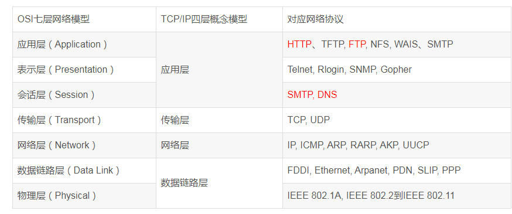
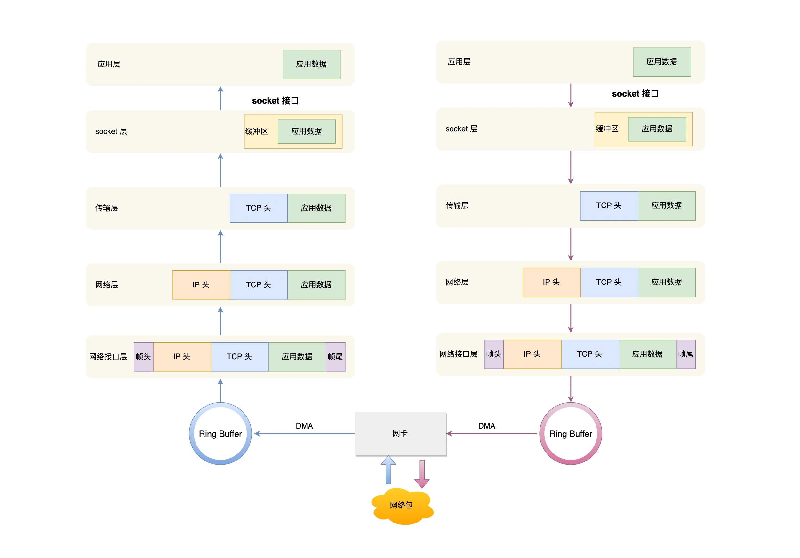
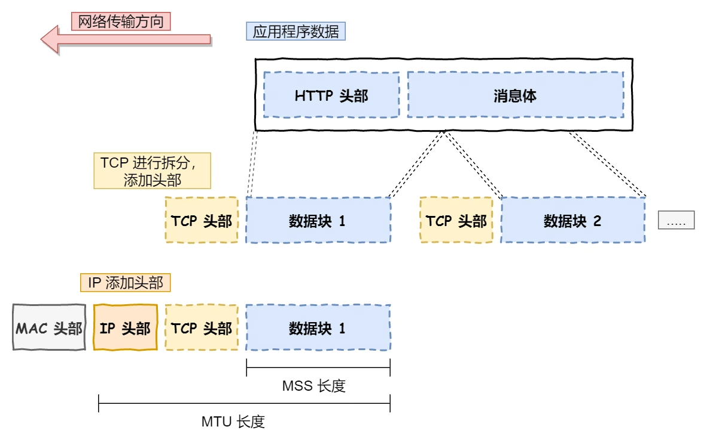

Ch02-TCP 之 网络模型
August 2, 2021
1. OSI 七层模型 VS TCP/IP 四层模型 #

2. TCP/IP 四层模型报文封装/解封装 #

- 网络接口层的传输单位是帧（frame）
- IP 层的传输单位是包（packet）
- TCP 层的传输单位是段（segment）
- HTTP 的传输单位则是消息或报文（message）
但这些名词并没有什么本质的区分，可以统称为数据包。
3. TCP/IP 报文拆分 #

- 如果 TCP 报文大小超过 MSS（握手阶段协商，大概为 1460 字节） ，就会对报文进行分片，得到一个即将传递到网络层的 TCP 报文。（如果途中一个分片丢失，只需要单独发送该分片就行，该分片也被称为 TCP Segment）。
- 如果 IP 报文大小超过 MTU（以太网中一般为 1500 字节）就会再次进行分片，得到一个即将发送到网络的 IP 报文。
4. TCP VS UDP #
| TCP | UDP | |
|---|---|---|
| 连接 | 面向连接，传输数据前先要建立连接 | 不需要连接，即刻传输数据 |
| 服务对象 | 仅支持一对一的两点服务 | 一对一、一对多、多对多的交互通信 |
| 可靠性 | 可靠交付数据的，数据可以无差错、不丢失、不重复、按序到达 | 尽最大努力交付，不保证可靠交付数据 |
| 拥塞控制 | 有 | 无 |
| 流量控制 | 有 | 无 |
| 首部开销 | 首部长度较长，会有一定的开销 | 首部只有 8 个字节，并且是固定不变的，开销较小 |
| 传输方式 | 流式传输，没有边界，但保证顺序和可靠 | 一个包一个包的发送，是有边界的，但可能会丢包和乱序 |
| 分片不同 | 数据大小如果大于 MSS 大小会进行分片 | 不会分片，依赖网络层 MTU 大小及分片 |